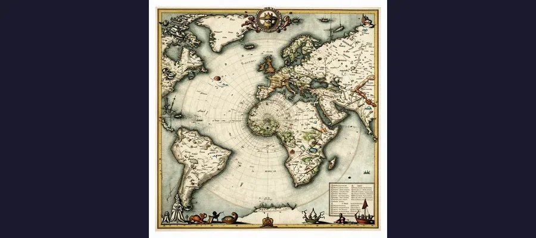
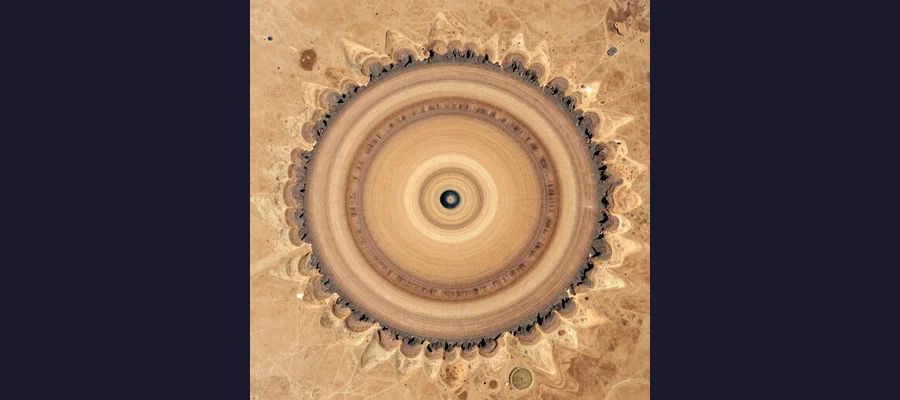

Atlantis: The Lost Civilization That Has Captivated Humanity for 2,400 Years

Atlantis — the most famous lost civilization in human history. Plato described a magnificent island empire with concentric rings of canals, advanced engineering, and a navy of 1,200 ships that sank beneath the Atlantic Ocean in a single catastrophic day and night around 9600 BCE. He is the only source, and the debate has raged for over 2,400 years.
Sometime around 360 BCE, the Greek philosopher Plato wrote down a story about a magnificent island civilization that had vanished beneath the sea. He placed it beyond the Pillars of Hercules — what we now call the Strait of Gibraltar, the narrow passage between Spain and Morocco that marked the edge of the known world in antiquity. The island was called Atlantis, and according to Plato, it was larger than Libya and Asia combined, home to a society of extraordinary power and wealth, ruled by ten kings from a capital city built on concentric rings of land and water, adorned with a mysterious golden metal called orichalcum, and defended by a navy of twelve hundred ships. And then, in a single day and night of catastrophic earthquakes and floods, the entire civilization sank into the ocean and was lost forever. It is the most famous lost civilization legend in human history — and Plato is the only source. No other ancient writer, historian, or poet independently corroborates the story. For over 2,400 years, the question of whether Atlantis was real, allegory, or something in between has captivated emperors, explorers, scientists, and dreamers. It has launched expeditions, spawned conspiracy theories, inspired some of the greatest works of literature and film, and resisted every attempt at a definitive answer.
The Atlantis story appears in two of Plato's dialogues: the Timaeus and the Critias, both written around 360 BCE. In the Timaeus, Plato has the character Critias describe how his ancestor, the great Athenian lawgiver Solon, visited Egypt around 590 BCE and spoke with priests at the temple of the goddess Neith in the city of Sais. The Egyptian priests told Solon that Athens had once fought a great war against a powerful empire from across the sea — Atlantis — and that Athens had stood alone against the invaders and won. But after the victory, the Atlanteans grew corrupt and arrogant, and the gods punished them. In a single catastrophic day and night of earthquakes and floods, Atlantis sank beneath the waves. The priests claimed this had happened 9,000 years before Solon's time, placing the destruction around 9600 BCE — deep in the Stone Age, millennia before the earliest known civilizations. Plato insists, through his characters, that this is a true story, not a myth — an account preserved by Egyptian record-keepers when the Greeks had forgotten their own ancient history.
The Empire of Poseidon: Inside Plato's Atlantis
Plato's description of Atlantis is extraordinarily detailed — so detailed that it has fueled centuries of speculation that he must have been describing a real place. According to the Critias, Atlantis was originally given to the Greek god Poseidon, who fell in love with a mortal woman named Cleito and fathered five pairs of twin sons. The eldest was named Atlas, and the island and the surrounding ocean (the Atlantic) were named after him. Poseidon carved the island into a series of concentric rings — alternating bands of land and water, each perfectly circular, with bridges and canals connecting them. At the center stood a magnificent temple to Poseidon, roofed with ivory and adorned with gold, silver, and orichalcum — a metal that "sparkled like fire" and was found nowhere else in such abundance.
Atlantis was, in Plato's telling, a paradise. The island was rich in every resource: forests of timber, herds of elephants, abundant wildlife, precious metals, and fertile soil that produced two harvests per year. The Atlanteans engineered an elaborate system of canals, docks, and harbors, and their capital city was a wonder of architecture and urban planning. They possessed a powerful navy of twelve hundred ships and a vast army. Ten kings, descended from Poseidon's ten sons, ruled the island in a federation, governed by laws inscribed on a pillar of orichalcum inside the Temple of Poseidon. In the beginning, the Atlanteans were virtuous and noble. But over generations, their divine nature faded and their mortal natures took over. They became greedy, aggressive, and imperialistic, conquering territories across the Mediterranean — parts of Europe as far as Tyrrhenia (Italy) and parts of Africa as far as Egypt. Only Athens, the ideal city-state of Plato's philosophy, stood against them and won.
📝 The Unfinished Story: Why Plato Never Finished Atlantis
The Critias dialogue is unfinished. Plato breaks off mid-description, in the middle of Zeus convening a council of the gods to decide how to punish the corrupt Atlanteans. The text simply ends. Plato had planned a third dialogue, the Hermocrates, which was never written at all. Why Plato left the story incomplete has been debated for millennia. Some scholars believe he lost interest or died before finishing. Others suggest that he realized the allegory had served its philosophical purpose and that continuing would risk readers taking it too literally. The incomplete text has added to the mystique — a story that is literally unfinished, about a civilization that was unfinished, destroyed by its own hubris before it could reach its potential. Like the tantalizing gaps in the Dead Sea Scrolls, the missing ending has allowed imagination to fill the void for over two thousand years.

For centuries, cartographers included Atlantis on maps of the Atlantic Ocean. This 1669 illustration by Athanasius Kircher shows the legendary island with its characteristic concentric rings of land and water — a geography that has never been found in any real location.
The Real Candidates: What Inspired the Legend?
Most classical scholars agree that Atlantis was either a philosophical allegory — a fictional counterpoint to the ideal Athens of Plato's Republic — or a story inspired by dim cultural memories of real catastrophes. The question is: which catastrophes? Several candidates have emerged over the centuries, each with compelling evidence and serious limitations.
The strongest candidate is the Minoan civilization, the advanced Bronze Age culture that flourished on the island of Crete from approximately 3000 to 1100 BCE. The Minoans were the most sophisticated civilization of their era in the Mediterranean — they built enormous palace complexes at Knossos and Malia, developed advanced engineering, created vibrant art, and maintained a powerful maritime trade network across the eastern Mediterranean. Around 1600 BCE (some dating suggests 1628 BCE), the volcanic island of Thera (modern Santorini), approximately 100 kilometers north of Crete, erupted in one of the most catastrophic volcanic events in human history — a VEI 7 eruption that was roughly one hundred times more powerful than the 1980 eruption of Mount St. Helens. The eruption destroyed the Minoan settlement of Akrotiri on Thera, generated massive tsunamis that devastated the coast of Crete, and blanketed the region in ash. Recent geological research, including a 2021 study in Scientific Reports, confirmed that Santorini tsunami deposits reached at least 400 meters inland at Malia on Crete, with wave run-up not exceeding 8 meters. The Minoan civilization was severely weakened and may have collapsed entirely within a few generations. The parallels to Plato's Atlantis are striking: an advanced island civilization destroyed in a single catastrophic event involving earthquakes and floods. But there are significant problems with the identification. The Minoan civilization was not "beyond the Pillars of Hercules" — it was in the middle of the Mediterranean. The destruction occurred around 1600 BCE, not 9600 BCE. And the Minoans did not fight a war with Athens. Plato may have incorporated cultural memories of the Thera eruption into his allegory, but Atlantis was not simply Minoan Crete.
🌊 The Thera Eruption: The Disaster That Changed the Ancient World
The Minoan eruption of Thera (Santorini) was one of the most powerful volcanic events in the last 10,000 years. With a Volcanic Explosivity Index of 7, it ejected approximately 60 to 100 cubic kilometers of material into the atmosphere. The eruption created a caldera — a massive volcanic crater — that is still visible today as the bay at the center of Santorini. The tsunami it generated devastated coastal settlements across the eastern Mediterranean, and ash falls were recorded as far away as Egypt, Turkey, and the Black Sea. Some scholars have connected the eruption to biblical plagues, the parting of the Red Sea, and even the legend of the lost continent. The settlement of Akrotiri, buried under meters of volcanic ash like a Greek Pompeii, has yielded extraordinary frescoes and artifacts that reveal a remarkably sophisticated society. The Thera catastrophe is the closest thing the ancient Mediterranean had to an Atlantis-level destruction — a real event that may have echoed through Greek oral tradition for over a thousand years before Plato put it into writing.
Other Candidates: From the Sahara to the North Sea
Beyond the Minoan theory, several other locations have been proposed as the real inspiration for Atlantis. The Tartessos civilization in southwestern Spain — a wealthy ancient trading culture located beyond the Pillars of Hercules — was suggested as early as antiquity. The Greek historian Herodotus described Tartessos as a fabulously wealthy kingdom, and some modern researchers have speculated that its ruins may lie buried in the Doñana wetlands of southern Spain. In 2011, satellite imagery and radar surveys of the Doñana National Park revealed what appeared to be remnants of a massive ancient settlement, including a possible rectangular structure and circular features. The research team, led by archaeologist Sebastian Celestino, emphasized that the findings were preliminary and did not confirm Atlantis. The Richat Structure, also known as the "Eye of the Sahara," is a massive natural geological formation in Mauritania approximately 40 kilometers in diameter, consisting of concentric rings of rock that bear a striking visual resemblance to Plato's description of Atlantis. While geologists have confirmed that the Richat Structure is entirely natural — formed by the erosion of a geological dome over millions of years — the visual similarity has made it a favorite of internet theorists and Atlantis enthusiasts.
Other candidates include Doggerland, the vast land bridge that once connected Britain to continental Europe before being flooded by rising sea levels at the end of the last Ice Age around 6500 BCE; the ancient Greek city of Helike, which sank into the Gulf of Corinth during a catastrophic earthquake in 373 BCE — during Plato's own lifetime — providing a vivid contemporary example of a city swallowed by the sea; and the Bimini Road, a submerged rock formation in the Bahamas that some enthusiasts have claimed is a remnant of Atlantean construction. All of these candidates share one quality: they are real places that experienced real catastrophes. None of them matches Plato's description in full.

The Richat Structure in Mauritania, photographed from orbit. Its concentric rings stretch 40 kilometers across the Sahara Desert, and some theorists believe it matches Plato’s description of Atlantis. Scientists have confirmed it is an entirely natural geological formation — but the resemblance is uncanny.
- Minoan Crete / Thera eruption (c. 1600 BCE) — Advanced island civilization destroyed by catastrophic volcanic eruption and tsunamis; strongest parallel to Plato's Atlantis but wrong location and date
- Tartessos (southwestern Spain) — Wealthy trading civilization beyond the Pillars of Hercules; 2011 satellite imagery suggested buried ruins in Doñana wetlands
- Richat Structure (Mauritania) — Natural geological formation with concentric rings resembling Plato's Atlantis; confirmed as entirely natural, not man-made
- Doggerland (North Sea) — Land bridge between Britain and Europe flooded after last Ice Age c. 6500 BCE; vast territory lost to rising seas
- Helike (Greece, 373 BCE) — City that sank into the sea during Plato's lifetime; contemporary example of catastrophic submergence
- Bimini Road (Bahamas) — Submerged rock formation; some claim Atlantean construction but geologists identify it as natural beachrock
From Allegory to Industry: The 2,400-Year Hunt for a Sunken World
For over two thousand years, most educated readers of Plato understood Atlantis as what it almost certainly was: a philosophical allegory, a fictional society created to illustrate the dangers of imperial ambition and the superiority of a just, well-governed state over a wealthy, corrupt one. But in 1882, a American politician and amateur scholar named Ignatius Donnelly published a book that changed everything. Atlantis: The Antediluvian World argued that Atlantis had been a real, advanced civilization that had existed in the middle of the Atlantic Ocean and had been the source of all human culture — the common ancestor of Egyptian, Mayan, and European civilizations. Donnelly's book was a massive bestseller and launched the modern Atlantis industry. His methodology — drawing connections between widely separated cultures based on superficial similarities — would not survive modern scholarly scrutiny, but his conviction that Atlantis was real and waiting to be discovered inspired generations of searchers.
In the twentieth century, the search for Atlantis took on increasingly esoteric dimensions. Edgar Cayce (1877-1945), the American psychic known as the "Sleeping Prophet," claimed to have accessed information about Atlantis during trance states. Cayce described Atlantis as a technologically advanced civilization that had destroyed itself through the misuse of powerful crystal-based energy systems around 10,500 BCE — a detail that bears no resemblance to anything in Plato's account. Cayce predicted that portions of Atlantis would rise from the sea near the island of Bimini in the Bahamas, and in 1968, divers discovered the Bimini Road — a submerged rock formation that some enthusiasts interpreted as Atlantean construction. Geologists identified it as natural beachrock. Despite this, Cayce's visions and the Bimini Road remain central to popular Atlantis lore. Other researchers have proposed Atlantis in the Azores, the Canary Islands, Indonesia, Antarctica, Cuba, and even off the coast of Cyprus, where researcher Robert Sarmast claimed in 2004 to have found sonar evidence of man-made structures on the seabed — a claim that was never substantiated.
🧠 Was Atlantis Real? The Scientific Consensus
The overwhelming consensus among archaeologists, historians, geologists, and classicists is that Atlantis, as described by Plato, never existed. There is no geological evidence for a large island or continent in the Atlantic Ocean that sank in a single catastrophic event. The seabed of the Atlantic has been extensively mapped, and no submerged civilization has ever been found. No artifacts, no structures, no roads, no pottery — nothing. Plato's description of Atlantis existing 9,000 years before his time would place it in the early Stone Age, millennia before the development of agriculture, cities, or metallurgy. No known civilization from that era possessed the technology, the social organization, or the naval capabilities Plato describes. Most classical scholars believe Plato invented Atlantis as a philosophical device — a "noble lie" designed to make his political arguments more vivid and memorable. But the story has proven so powerful that it has transcended its original purpose entirely. Like the unbroken code of the Rosetta Stone before its decipherment, or the enduring enigma of the Shroud of Turin, Atlantis is a mystery that refuses to be resolved — not because the evidence is ambiguous, but because the idea is too compelling to let go.
- Plato (c. 360 BCE) — The sole ancient source; wrote Timaeus and unfinished Critias describing Atlantis as a cautionary tale about hubris and corruption
- Ignatius Donnelly (1882) — Published "Atlantis: The Antediluvian World"; launched modern Atlantis mania by arguing Atlantis was the mother of all civilizations
- Edgar Cayce (1920s-1940s) — "Sleeping Prophet" who described advanced Atlantean technology and predicted ruins would surface near Bimini
- Bimini Road (1968) — Submerged rock formation in the Bahamas; natural beachrock, not Atlantean construction
- Santorini/Thera research (ongoing) — Archaeological and geological studies of the Minoan eruption as possible inspiration for the legend
- Doñana satellite survey (2011) — Possible ancient ruins in Spanish wetlands; preliminary and unconfirmed
- Robert Sarmast (2004) — Claimed sonar evidence of structures off Cyprus; never substantiated
🌊 The Civilization That Lives Because It Died
Atlantis may be the most successful fictional civilization in the history of human imagination. Plato created it as a mirror — a way to show his fellow Athenians what happens when a society values wealth and power over justice and wisdom. The irony is that the civilization he invented to illustrate a philosophical point has taken on a life far beyond anything Plato intended. Atlantis has appeared in the works of Francis Bacon, Jules Verne, and J.R.R. Tolkien (whose island kingdom of Numenor is a deliberate retelling of the Atlantis myth). It has inspired Disney films, the superhero kingdom of Aquaman, video games, and an entire genre of pseudoscientific speculation. The search for Atlantis has consumed fortunes, careers, and reputations. It has taken divers to the seabeds of every ocean and satellite imagery to every continent. And it has found nothing. The absence of evidence is, in this case, extraordinary: we have mapped the ocean floor, we have radiocarbon-dated the geological record, we have identified the traces of every major volcanic eruption and tsunami in the last ten thousand years, and none of them point to an advanced civilization in the Atlantic that sank in a day and a night. But Atlantis does not require evidence to survive. It survives because it speaks to something deeper than archaeology — the human intuition that civilizations can fall, that knowledge can be lost, that the world we have built is not permanent. The real mystery of Atlantis is not where it was or whether it existed. The real mystery is why, 2,400 years after a Greek philosopher invented a story about the dangers of arrogance, we are still unable to stop looking for it. Like the vanished Romanov dynasty explored in the story of Anastasia Romanov, Atlantis is a ghost that haunts us not because it was real, but because the fear it represents — the fear that everything we have built can be swept away in an instant — is real enough. Atlantis sank, Plato tells us, because its people forgot the difference between power and virtue. It is a lesson we are still failing to learn.
Frequently Asked Questions
Did Atlantis really exist?
The overwhelming consensus among scholars is that Atlantis, as described by Plato, did not exist. There is no archaeological or geological evidence of a large island civilization in the Atlantic Ocean that sank in a single catastrophic event. Plato is the only ancient source for the story, and most classicists view it as a philosophical allegory — a fictional society created to illustrate the dangers of hubris and the superiority of a just state over a wealthy, corrupt one. However, Plato may have drawn on cultural memories of real catastrophes, such as the Minoan eruption of Thera (c. 1600 BCE) or the destruction of the city of Helike (373 BCE), as inspiration for certain details.
What was orichalcum?
Plato described orichalcum as a precious metal that sparkled like fire and was found abundantly in Atlantis, where it was used to adorn the Temple of Poseidon and cover the walls of the city's inner rings. The word means "mountain copper" or "mountain metal" in Greek. In ancient Rome, orichalcum was a brass-like alloy of copper and zinc. In 2015, marine archaeologists discovered orichalcum ingots in a shipwreck off the coast of Sicily dating to approximately 2600 years ago, confirming that a metal by this name was used in the ancient Mediterranean. Plato's orichalcum, however, was clearly semi-mythical — a metal of extraordinary beauty and value that existed only in his imagined Atlantis.
Where was Atlantis supposed to be located?
Plato placed Atlantis "beyond the Pillars of Hercules" — the ancient name for the Strait of Gibraltar, the narrow passage between Spain and Morocco that connects the Mediterranean Sea to the Atlantic Ocean. This placed Atlantis in the open Atlantic, outside the known world of the ancient Greeks. Modern location theories have placed Atlantis in the Mediterranean (Crete/Thera, Santorini, Sardinia, Malta), the Atlantic (Azores, Canary Islands, mid-Atlantic ridge), Africa (Richat Structure in Mauritania), the Caribbean (Cuba, Bahamas), and even Antarctica. None of these locations has produced evidence of an advanced civilization matching Plato's description.
Why do people still search for Atlantis?
The search for Atlantis persists because it speaks to deep human fears and desires: the fear that civilizations can collapse in an instant, the desire to believe that ancient peoples were more advanced than we assume, and the hope that lost knowledge might be recovered. The idea that a great civilization could vanish so completely that only a single philosopher's account survives is both terrifying and magnetic. Additionally, the Atlantis legend has become intertwined with modern conspiracy theories, New Age spirituality, and the romantic appeal of underwater exploration. As long as the ocean holds secrets, people will continue to look for Atlantis — not because the evidence suggests it is there, but because the story is too powerful to abandon.
📖 Recommended Reading
Want to learn more? Check out Amazon.com: Atlantis: Insights from a Lost Civilization eBook : Andrews, Shirley: Kindle Store on Amazon for a deeper dive into this fascinating topic. (As an Amazon Associate, we earn from qualifying purchases.)
References & Further Reading
- Wikipedia: Atlantis — Comprehensive overview of Plato's accounts, interpretations, location hypotheses, and cultural impact
- Britannica: Atlantis — Overview of the legendary island, Plato's descriptions, and modern scholarly interpretation
- Wikipedia: Minoan Eruption — The catastrophic Thera/Santorini volcanic eruption c. 1600 BCE and its impact on Minoan civilization
- Lespez et al. (2021): Santorini tsunami deposit at Malia, Crete — Scientific Reports study confirming Bronze Age tsunami impact on Minoan Crete
- Wikipedia: Tartessos — The ancient trading civilization in southwestern Spain, a proposed inspiration for the Atlantis legend
- Wikipedia: Richat Structure — The natural geological formation in Mauritania also known as the Eye of the Sahara
- Wikipedia: Ignatius L. Donnelly — The 19th-century politician whose 1882 book launched modern Atlantis speculation
Editorial note: reconstructions are continuously revised as imaging and inscription studies improve. See our Editorial Policy.